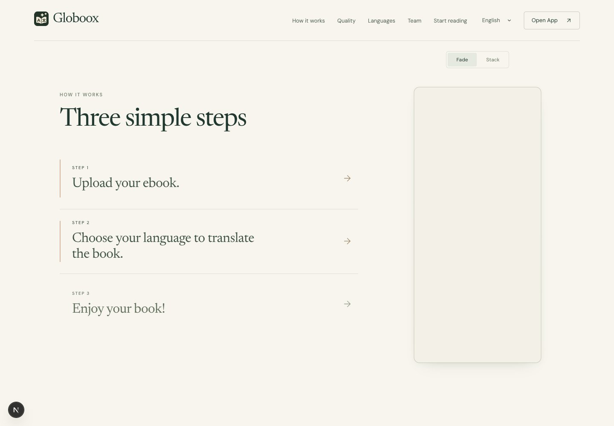
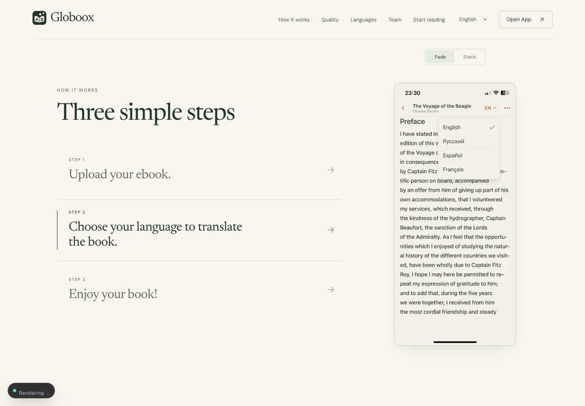
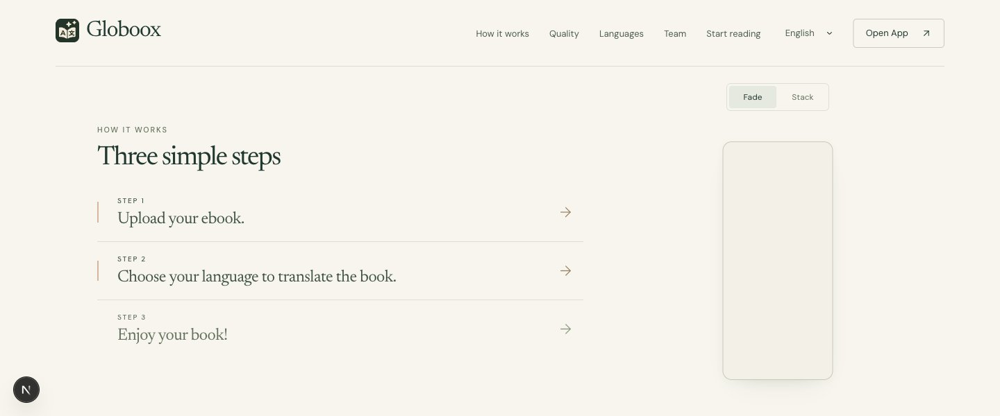

Globoox · Walkthrough motion reviewfade · 1050x700 · 0.265
fade · 1050x700 · 0.95
fade · 1440x1000 · 0.05
fade · 1440x1000 · 0.13
fade · 1440x1000 · 0.18

fade · 1440x1000 · 0.265
fade · 1440x1000 · 0.35

fade · 1440x1000 · 0.5
fade · 1440x1000 · 0.6
fade · 1440x1000 · 0.65
fade · 1440x1000 · 0.735
fade · 1440x1000 · 0.82
fade · 1440x1000 · 0.95

fade · 1440x600 · 0.265
fade · 1440x600 · 0.95
fade · 801x800 · 0.265
fade · 801x800 · 0.95
fade · 900x900 · 0.265
fade · 900x900 · 0.95
stack · 1050x700 · 0.265
stack · 1050x700 · 0.95
stack · 1440x1000 · 0.05
stack · 1440x1000 · 0.13
stack · 1440x1000 · 0.18
stack · 1440x1000 · 0.265
stack · 1440x1000 · 0.35
stack · 1440x1000 · 0.5
stack · 1440x1000 · 0.6
stack · 1440x1000 · 0.65
stack · 1440x1000 · 0.735
stack · 1440x1000 · 0.82
stack · 1440x1000 · 0.95
stack · 1440x600 · 0.265
stack · 1440x600 · 0.95
stack · 801x800 · 0.265
stack · 801x800 · 0.95
stack · 900x900 · 0.265
stack · 900x900 · 0.95